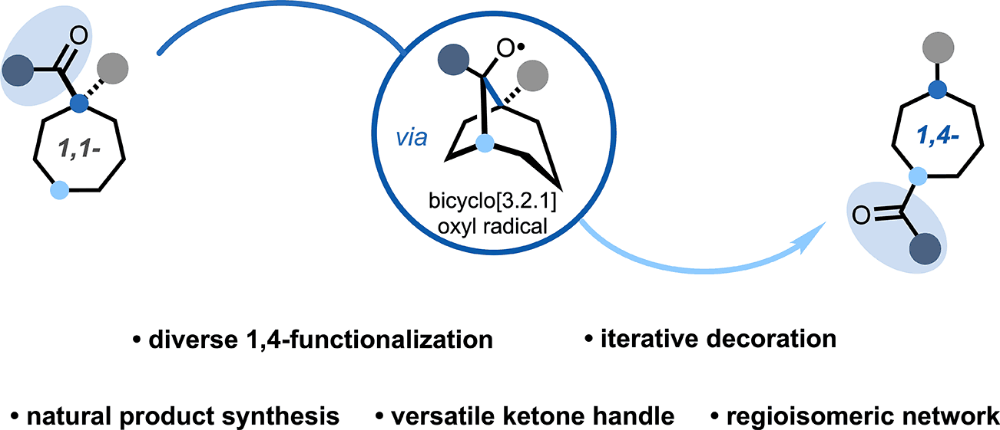
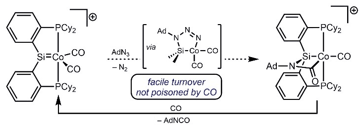

I study how selectivity arises in reversible reaction networks. Using dynamic radical chemistry, I remodel the skeletons and peripheries of saturated, C(sp3)-rich molecules, and I build differentiable kinetic models so that the behavior of those networks becomes something we can measure and predict rather than only rationalize. Before MIT, I studied chemistry and computer science at Carleton College, where I also minored in music performance in voice.
Research
-
Reaction-network control. In a densely connected, reversible network, selectivity can arise from how many rate constants relate to one another rather than from a single rate-determining step.
-
Skeletal and peripheral remodeling. Reversible hydrogen atom transfer samples radicals at multiple ring positions while a downstream radical addition and β-scission sequence sets the product, migrating a ketone across seven-membered rings to give 1,4-disubstituted products.
-
Differentiable kinetic modeling. I recover rate constants from timecourse data using networks specified in
Catalyst.jl, stiff solvers fromDifferentialEquations.jl, and adjoint sensitivities fromSciMLSensitivity.jl. -
Metal–ligand cooperativity. In cobalt silylenes the Co=Si bond offers two chemically distinct activation sites, letting cobalt and silicon divide a nitrene transfer to carbon monoxide that would otherwise poison a single-site catalyst.
Current work extends these ideas to new scaffolds and reaction classes.
Publications
-
Organometallics 2026, 45, 297–305.
-
Migrating Group Strategy for Remote Functionalization of Seven-Membered Rings
J. Am. Chem. Soc. 2025, 147, 32077–32084.

-
Cobalt Silylenes as Platforms for Catalytic Nitrene-Group Transfer by Metal–Ligand Cooperation
Angew. Chem. Int. Ed. 2022, 61, e202205748 · Hot Paper.

-
Novel Application of CO2-Assisted High Pressure Processing in Cucumber Juice and Apple Juice
LWT 2018, 96, 491–498.
* Corresponding author. † These authors contributed equally.
Software
- PocketForge: a full-stack design–make–test–analyze pipeline for drug design, with validated data APIs and explainable selectivity scoring.
- Know-de: an agentic LLM tutor that leads students through Socratic questioning instead of direct explanation.
- Geothermal Data Web App: an interactive dashboard built for the Carleton College geology department.
- PM2.5 Sensor Pipeline: data processing and analysis for low-cost passive particulate sensors.
- Natural Disaster Web App: an interactive interface for global natural-disaster data.
Teaching & Awards
Teaching facilitator for 5.12 Organic Chemistry I at MIT (Fall 2023, Spring 2024; average student rating 6.5/7), and previously a laboratory teaching assistant in organic and inorganic chemistry at Carleton College. I am a certified mentor in the MIT Department of Chemistry and the Wendlandt Lab.